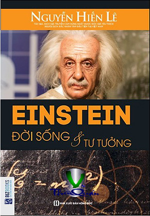

« Back
Einstein Đời Sống Và Tư Tưởng
By Nguyễn Hiến Lê

Vài Lời Thưa Trước
MỘT BỘ ÓC LẠ LÙNG VÀ MỘT TÂM HỒN ĐÁNG QUÍ
ĐỜI HỌC SINH
LỰA CON ĐƯỜNG PHÁT MINH VÀ NỔI DANH
E = MC2 VÀ NGUYÊN TỬ LỰC
“EINSTEIN HẠ GIỚI” VÀ THUYẾT TƯƠNG ĐỐI RA ĐỜI
ĐI KHẮP THẾ GIỚI DIỄN THUYẾT
THUYẾT “CHAMP UNIFIÉ” CHÌA KHOÁ VŨ TRỤ
ĐƯỢC ĐỨNG CHUNG VỚI CÁC VỊ THÁNH
ĐẦU EINSTEIN BỊ HITLER TREO GIÁ HAI VẠN ĐỨC KIM
QUA MĨ
BỨC THƯ LỊCH SỬ
NỖI ÂN HẬN CỦA NHÀ BÁC HỌC
EINSTEIN CẢNH CÁO CHÚNG TA
ĐỒNG CHÍ CỦA BERTRAND RUSSELL
VÀI NÉT VỀ ĐỜI TƯ CỦA EINSTEIN
GIẢN DỊ…
…MÀ HỒN NHIÊN
…VÀ NHŨN NHẶN, GHÉT QUẢNG CÁO
THÍCH GIÚP NGƯỜI
TƯ TƯỞNG CỦA EINSTEIN
TRIẾT NHÂN EINSTEIN